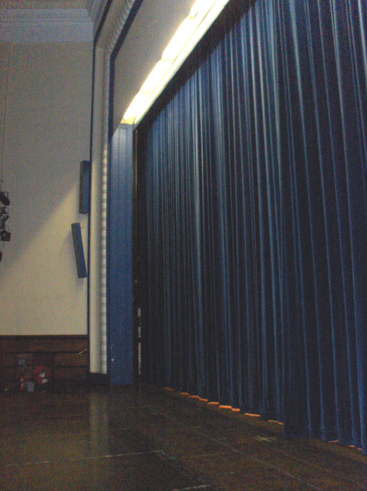
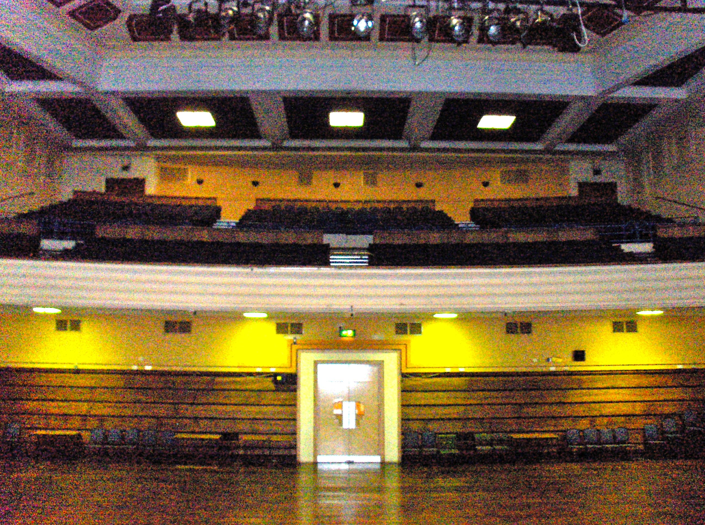
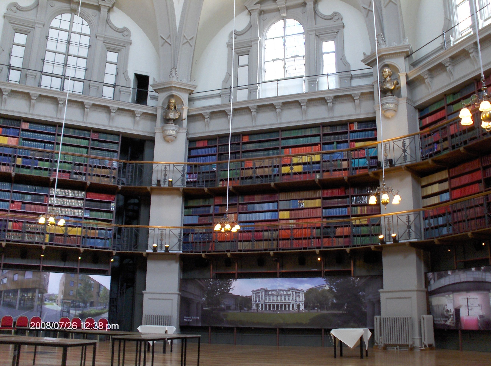
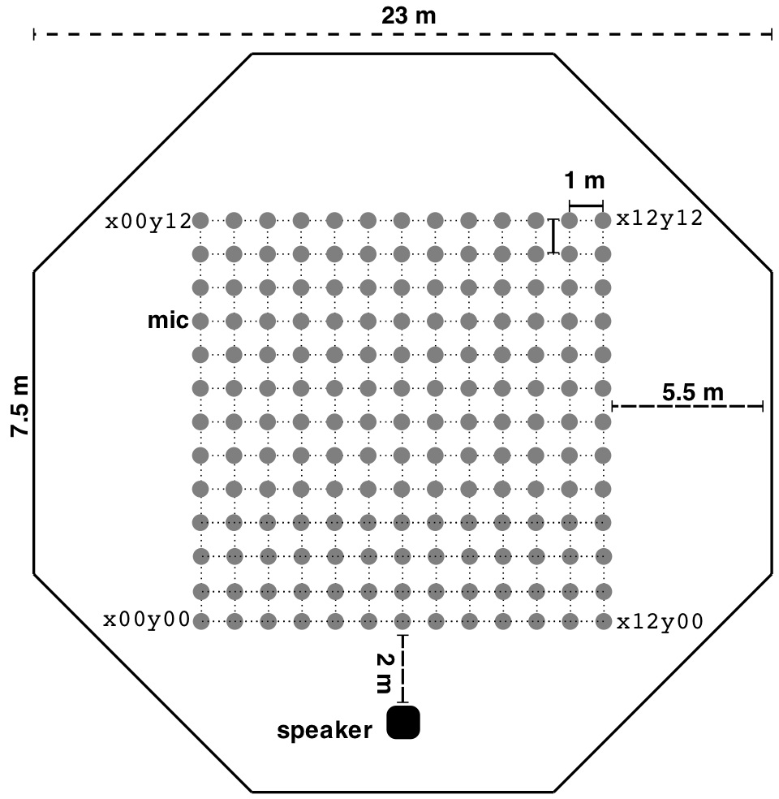
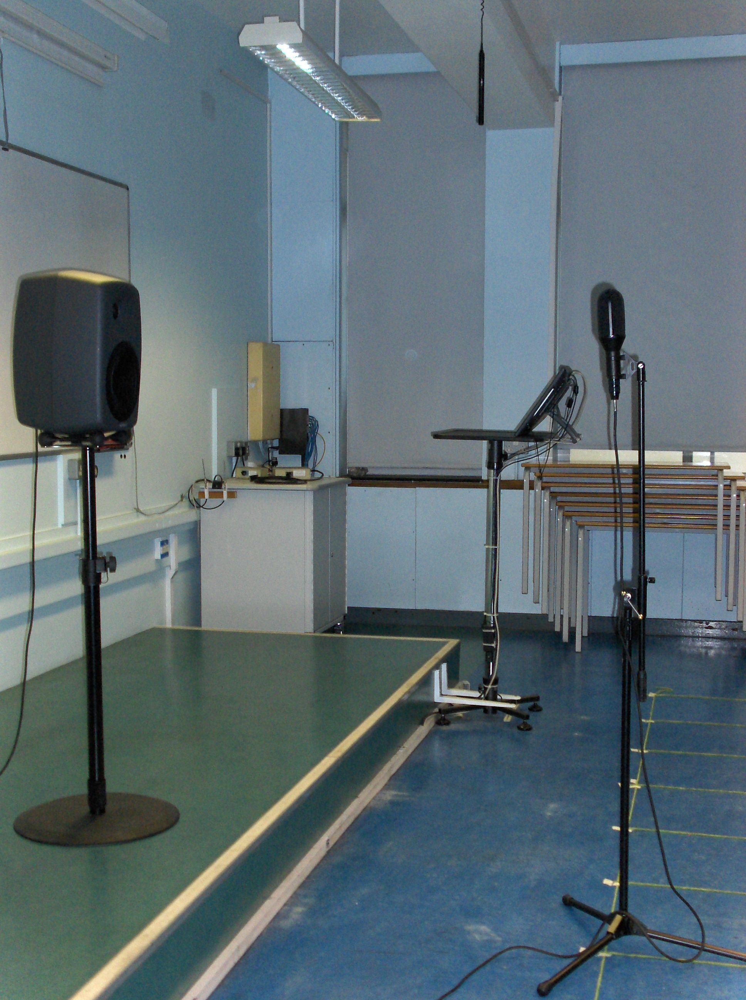
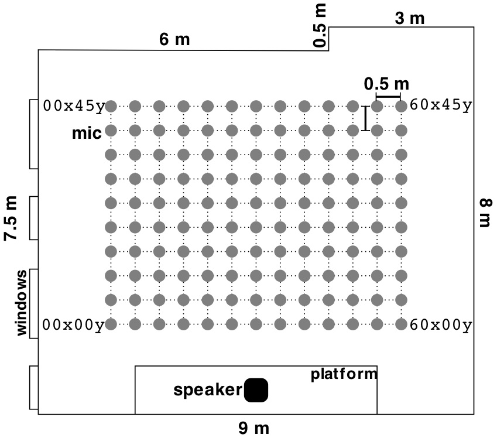

- Log in to post comments
This collection of room impulse responses was measured in the Great Hall, the Octagon, and a classroom at the Mile End campus of Queen Mary, University of London in 2008. The measurements were created using the sine sweep technique [1] with a Genelec 8250A loudspeaker and two microphones, an omnidirectional DPA 4006 and a B-format Soundfield SPS422B.
These IRs are released under the Creative Commons Attribution-Noncommercial-Share-Alike license with attribution to the Centre for Digital Music, Queen Mary, University of London.
When using any portion of this data set, cite:
Stewart, Rebecca and Sandler, Mark. "Database of Omnidirectional and B-Format Impulse Responses", in Proc. of IEEE Int. Conf. on Acoustics, Speech, and Signal Processing (ICASSP 2010), Dallas, Texas, March 2010.
Note that these files are also available for download through the C4DM Research Data Repository.
[1] Farina, Angelo, "Simultaneous measurement of impulse response and distortion with a swept sine technique," in 108th AES Convention, Paris, France, February 2000.
Great Hall
The Great Hall is a multipurpose hall that can hold approximately 800 seats. The hall has a stage and seating areas on the floor and a balcony. The microphones were placed in the seating area on the floor, roughly a 23 m x 16 m area, which was cleared of chairs. The microphone positions are identical to the layout for the Octagon, 169 IRs over a 12 m x 12 m area. The room is significantly bigger than the measuring area as the balcony extends 20 m past the rear wall.

The filenames indicate the microphone/channel and position. For example, Yx04y10.wav is the Y channel, up-down bidirectional, from the Soundfield microphone at the 5th column from the right of the 11th row from the front when facing the loudspeaker. x00y09.wav is the DPA microphone at the 1st column from the left of the 10th row from the front when facing the loudspeaker.
Download
All files are zip files. Each IR is a 96 kHz, 32 bit wav file.
- Documentation (photo of room, diagram of layout) and sample IR (2.4 MB)
- Omnidirectional (67.6 MB)
- W of B-format (60.5 MB)
- X of B-format (59.8 MB)
- Y of B-format (60.1 MB)
- Z of B-format (60.8 MB)
Octagon
The Octagon is a Victorian building completed in 1888 and originally designed to be a library. It is currently used as a conference venue, but the walls are still lined with books with a wooden floor and plaster ceiling. As the name suggests, the room has eight walls each 7.5 m in length and a domed ceiling reaching 21 m over the floor, with an approximate volume of 9500 cubic m. A set of 169 IRs were measured in the centre of the room.

The filenames indicate the microphone/channel and position. For example, Yx04y10.wav is the Y channel, up-down bidirectional, from the Soundfield microphone at the 5th column from the right of the 11th row from the front when facing the loudspeaker. x00y09.wav is the DPA microphone at the 1st column from the left of the 10th row from the front when facing the loudspeaker.
Download
All files are zip files. Each IR is a 96 kHz, 32 bit wav file.
- Documentation (photo of room, diagram of layout) and sample IR (1.8 MB)
- Omnidirectional (60.3 MB)
- W of B-format (64.3 MB)
- X of B-format (64.5 MB)
- Y of B-format (63.4 MB)
- Z of B-format (62.9 MB)
Classroom
A set of 130 IRs were taken within a classroom in the School of Electronic Engineering and Computer Science. The room measures roughly 7.5 x 9 x 3.5 m (236 cubic m) with reflective surfaces of a linoleum floor, painted plaster walls and ceiling, and a large whiteboard. When in use for lectures the room is filled with desks and chairs. These were stacked and moved to the side against the windows during the measurements. Measurements are 50 cm apart arranged in 10 rows and 13 columns relative to the speaker, with the 8th column directly on axis with the speaker.

The filenames indicate the microphone/channel and position. For example, Z05x10y.wav is the Z channel, up-down bidirectional, from the Soundfield microphone at the 2nd column from the right of the 3rd row from the front when facing the loudspeaker. 00x20y.wav is the DPA microphone at the 1st column from the left of the 5th row from the front. See the diagram for further details.
Download
All files are zip files. Each IR is a 96 kHz, 32 bit wav file.